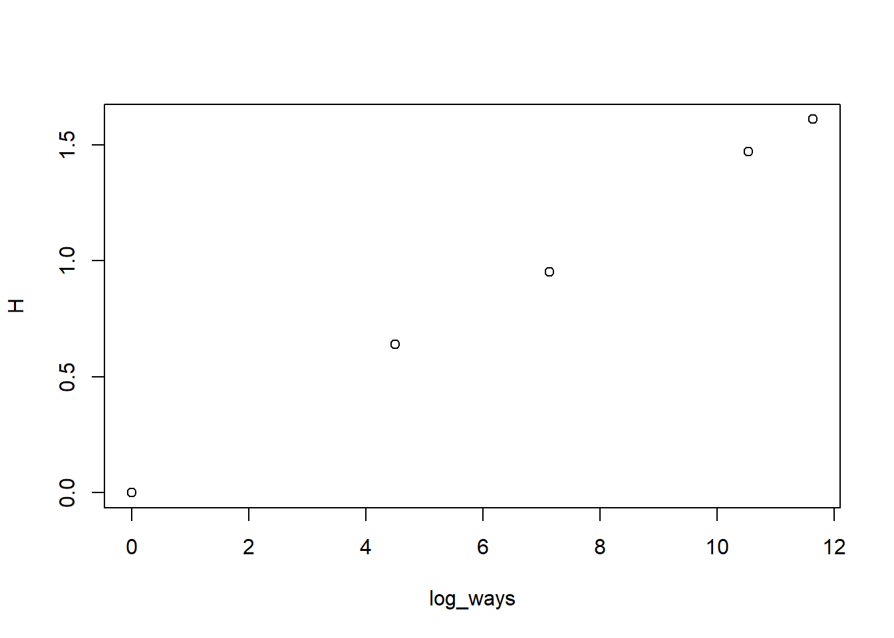
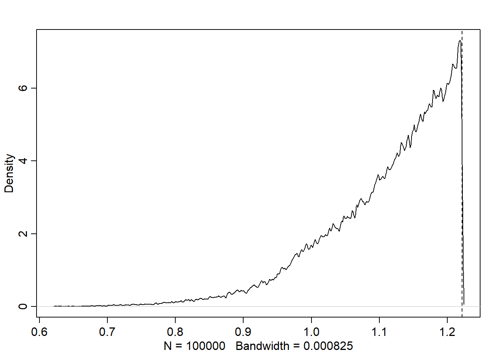

Code
library(rethinking)
library(dagitty)
library(tidyverse)library(rethinking)
library(dagitty)
library(tidyverse)The posterior distribution is also a great example of maximum entropy. It is the distribution that has the smallest divergence from the prior while still remaining consistent with the data and constraints.
Recall that maximum was seen in ch 7 following the three deserata:
We get the following measure of uncertainty (information entropy) for distribution \(p\) for probabilities \(p_i\) for events \(i\).
\[H(p) = - \sum_i p_i \log p_i\]
Let’s think about an example where we have 10 pebbles and 5 buckets. We want to get the entropy of each configuration where it is equally likely to get a pebble in each of the buckets.
p <- list()
p$A <- c(0,0,10,0,0)
p$B <- c(0,1,8,1,0)
p$C <- c(0,2,6,2,0)
p$D <- c(1,2,4,2,1)
p$E <- c(2,2,2,2,2)
p_norm <- lapply(p, \(x) x/sum(x))
H <- lapply(p_norm, \(x) -sum(ifelse(x==0, 0, x*log(x)))) |> unlist()
H A B C D E
0.0000000 0.6390319 0.9502705 1.4708085 1.6094379 Notice that distribution E, which can be realized by the greatest number of ways, has the highest entropy.
ways <- c(1, 90, 1260, 37800, 113400)
log_ways <- log(ways)
plot(log_ways, H)
Note, information entropy is an approximation of the log ways per pebble. Again, showing that entropy is the measure of the number of unique arrangements. As the number of pebbles grows larger, the approximation gets better.
Recall from ch 2 that a Gaussian emerges from an ensemble of small factors adding together. The Gaussian is the best choice of a distribution when variance is known (or is known to be finite). Let’ introduce the generalized normal distribution
\[\text{Pr}(y|\mu,\alpha, \beta) = \frac{\beta}{2 \alpha \Gamma(1/\beta)} e^{-(\frac{|y-\mu|}{\alpha})^\beta}\]
The goal is the compare a regular Gaussian to several generalized normals with the same variance. See the book for the plot, but we see that entropy is maximized for \(\beta=2\) and variance set to \(\sigma^2=1\). What we see is that the regular Gaussian is as spread out as possible while also maintaining the \(\sigma^2\) constraint. That’s it. No other constraint then constant variance. Now, when we feel comfortable making additional assumptions, that is when the principle of maximum entropy leads to a different distribution.
See book for a really nice derivation for why Gaussian is maximum entropy distribution when we only constrain the variance.
Now, lets show that the binomial distribution is the maximum entropy distribution when:
Let’s say that in two trials of picking a marble with a even amount of white and blue, we expect to draw 1.4 blue marbles. This is equivalent to a \(p=0.7\). The entropy of the binomial distribution with this expected value is:
p <- 0.7
# ww, bw, wb, bb
A <- c((1-p)^2, p*(1-p), (1-p)*p, p^2)
-sum(A*log(A))[1] 1.221729Now, let’s simulate some other distributions that aren’t the binomial:
sim_p <- function(G=1.4){
x123 <- runif(3)
x4 <- (G * sum(x123) - x123[2] - x123[3]) / (2-G)
z <- sum(x123, x4)
p <- c(x123, x4) / z
list(H=-sum(p*log(p)), p=p)
}
a <- sim_p()
a$H
[1] 1.165466
$p
[1] 0.1539271 0.1048772 0.1872687 0.5539271sum(a$p * c(0,1,1,2))[1] 1.4Let’s simulate 100,000 distributions:
H <- replicate(1e5, sim_p())
dens(as.numeric(H[1,]), adj=0.1)
abline(v=-sum(A*log(A)), lty=2)
We see that A, the distribution generated by the binomial, is the maximum entropy. Let’s see which of our simulated distributions got the closest:
entropies <- as.numeric(H[1,])
H[2,][which.max(entropies)][[1]]
[1] 0.09023528 0.20995111 0.20957833 0.49023528A[1] 0.09 0.21 0.21 0.49Practically identical to A! Something else to notice, A is as close as we can get to even while also maintaining the required expected value.
To implement the GLM strategy we simply replace the parameter describing the shape of the likelihood with a linear model.
For count data this looks like:
\[\begin{align} y &\sim \text{Binomial}(n, p_i)\\ f(p_i) &= \alpha + \beta(x_i - \bar{x}) \end{align}\]
Our \(f\) here is some link function that takes our parameter of interest and turns it into a linear function of the data.
It has long been a technique where people look at histograms and try to decide the likelihood. But again, the likelihood is that of the residuals distribution. That is why we need to employ principles when choosing likelihood functions.
The exponential family is a common family of distributions. Every distribution in the family is the maximum entropy distribution for different sets of constraints. Let’s talk about a couple
Let’s introduce some link functions.
The logit:
\[\begin{align} y &\sim \text{Binomial}(n, p_i)\\ \text{logit}(p_i) &= \alpha + \beta(x_i - \bar{x}) \end{align}\]
The logit maps a parameter that is defined as a probability mass onto a linear model than can take any real value. The logit is defined as:
\[\text{logit}(p_i) = \log \frac{p_i}{1-p_i}\]
This is of course the log-odds.
We can also define the inverse function:
\[p_i=\frac{\exp(\alpha + \beta x_i)}{1 + \exp(\alpha + \beta x_i)}\]
which is known as the logistic.
Note, now when we have a one unit change in \(x\), this does not correspond to a constant change in \(y\). This is because we have squished the space of \(x\) to fall in the new boundaries of 0 and 1. This might mean that a 1 unit change of \(x\) effects the output \(y\) relative to the current position of \(x\).
Let’s now look at the log link. One common application would be if we want to model the standard deviation \(\sigma\) of a Gaussian which is constrained to be positive.
\[\begin{align} y &\sim \text{Normal}(\mu, \sigma_i)\\ \log(\sigma_i) &= \alpha + \beta(x_i - \bar{x}) \end{align}\]
While this is nice to use to constrain the output to be positive, it can be an issue when we ask the model to predict outside of the range of training data. This is because the output grows exponentially.
We can have omitted variable bias in GLMs too, and it can be worse. The main reason is that the boundary distortion can suppress causal influence.
The book calls out that we shouldn’t be using WAIC/PSIS to compare models that have different likelihood functions. I get where he is coming from since we are ELPD usually, but I think it should be fine if we use different utility functions